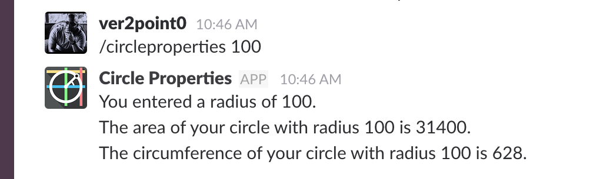

Circle Bot
If your team uses Slack, and often needs to calculate Circle dimensions, you can now do them inside the app.
The Circle Bot can take a circle's Radius and output the Diameter, Area, and Circumference.


Usage
Use the button above to install into your Slack team.
/circleproperties X takes a Circle's radius (X) and calculates the corresponding Diameter, Area, and Circumference.
Brought to you by JV